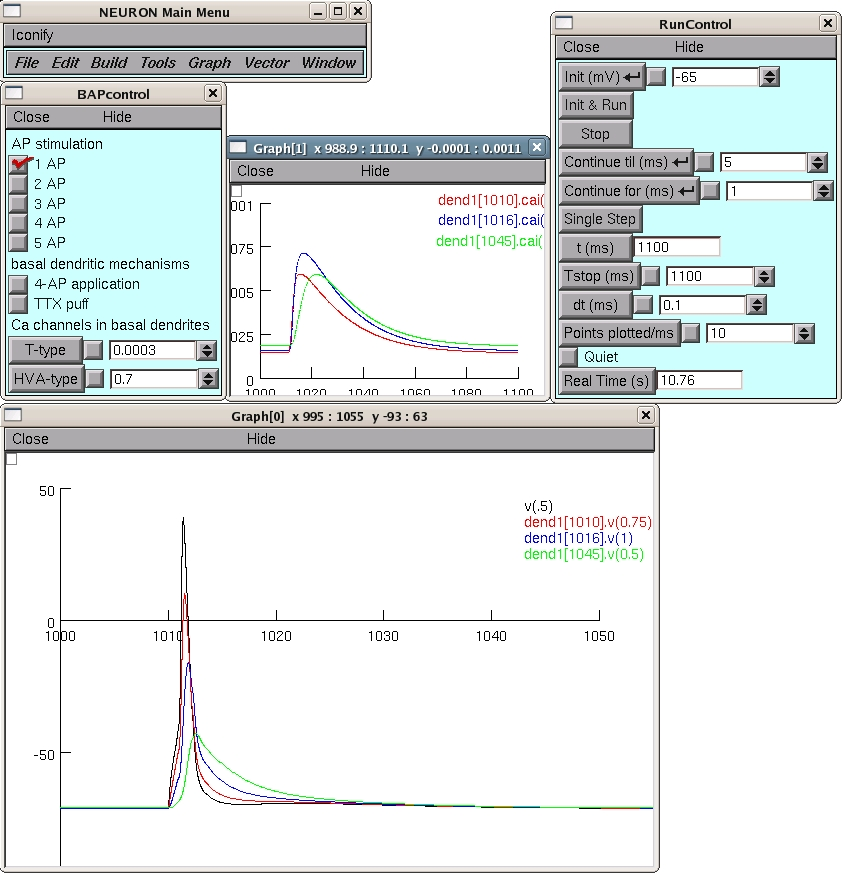

This is the readme for the model published in Kampa & Stuart (2006) Calcium spikes in basal dendrites of layer 5 pyramidal neurons during action potential bursts. J Neurosci 26(28):7424-32. The simulation creates two plots showing voltage and calcium changes in basal dendrites of layer 5 pyramidal neurons during action potential (AP) backpropagation. Running after selecting 1 AP leads to (after zooming in on the Ca2+ plot):  Usage: Autolaunch from ModelDB **or** download and extract the archive and then compile the mod files in the mod directory and run under ... linux/unix ---------- by typing nrnivmodl mod in the top level directory. Then type nrngui mosinit.hoc mswin ------- by running mknrndll, cd'ing to the mod directory and press make nrnmech.dll button. Copy the nrnmech.dll file to the parent directory of the mod folder (the top-level directory). Double click on the mosinit.hoc file. MAC OS X -------- drag and drop the mod folder onto mknrndll icon in the NEURON application folder. Start a terminal window, cd to the directory within the expanded archive and type mod/powerpc/special mosinit.hoc - to start the simulation. ------- Choose the number of APs in a burst and press the run button. By increasing the number of APs the calcium signal in the basal dendrites will increase supralinearly. 3 or more APs in a burst will lead to generation of a dendritic calcium spike similar to the experimental results shown in Kampa & Stuart (2006). In addition, a 4-AP experiment, blocking IA channels, can be simulated or a TTX experiment blocking local Na channels. created by B. Kampa (2006) kampa@hifo.uzh.ch 20120126 Cad.mod solve method updated to derivimplicit from euler as per http://www.neuron.yale.edu/phpbb/viewtopic.php?f=28&t=592